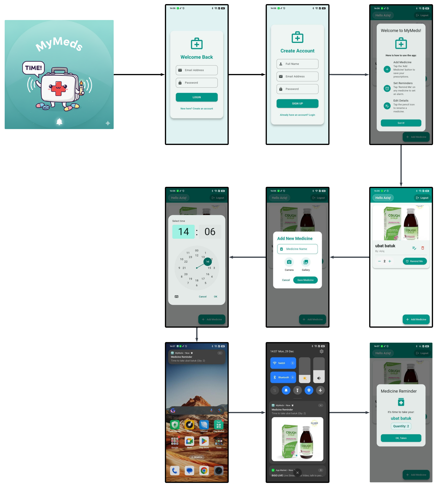

MyMeds
A comprehensive mobile medication management system built with Flutter & Firebase

A comprehensive mobile medication management system built with Flutter & Firebase
MyMeds is a comprehensive medication management system designed to help users track their prescriptions, set reminders, and monitor their adherence to medical treatments. It is a mobile application built using Flutter for the frontend and Firebase for the backend, providing a seamless experience for users to manage their health effectively.
This project was developed as a final year capstone project to address the common issue of medication non-adherence among elderly patients. The goal was to create a simple, intuitive mobile interface that could be used by patients and monitored by caregivers.
